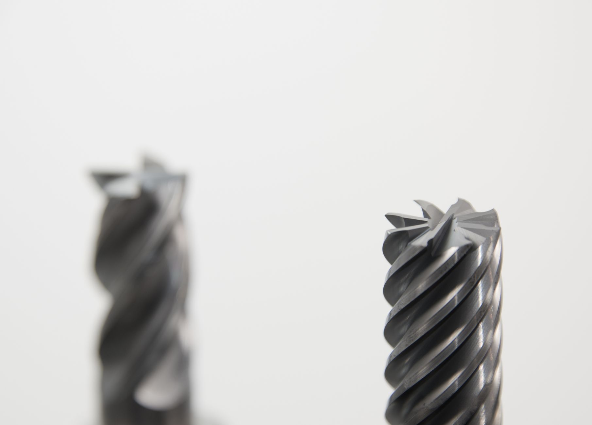

소부장 1700억 6개 분야, 실제 수혜 구간 어디인가

산업통상자원부는 2025년 소부장(소재·부품·장비) 지원 예산을 전년 대비 약 40% 늘린 1700억 원으로 확정하고 반도체, 이차전지, 디스플레이, 자동차, 바이오, 에너지 등 6개 첨단산업 분야에 배분했다. 중소·중견 기업이 자체 투자하는 금액의 50%까지 정부가 직접 매칭 지원하는 구조로, 대기업 협력사 중심의 소재 내재화를 겨냥한다.
이번 지원의 핵심 타깃은 반도체 전(前)공정 소재(포토레지스트·고순도 가스·CMP 슬러리)와 이차전지 양극재·전해질 소재 분야다. 산업부는 해당 6개 분야에서 국산화 목표 품목을 각각 10~15개씩 지정하고, 수요 대기업(삼성전자·SK하이닉스·LG에너지솔루션 등)과 소부장 중견기업 간 '공동 개발→시제품 인증→양산 연계' 3단계 계약을 의무화한다.
2019년 일본 수출규제 이후 정부 누적 소부장 투자액은 약 4조 원을 넘어섰다. 그러나 같은 기간 국내 반도체 소재 자급률은 포토레지스트 기준 30% 내외로 일본산 의존도를 완전히 탈피하지 못했다. 이는 '개발 성공→양산 적용' 단계에서 수요 대기업의 검증 주기(통상 18~36개월)가 예산 집행 주기를 초과하는 구조적 병목에서 기인한다.
호남 반도체 클러스터(광주·전남)는 이번 지원에서 차량용 반도체 소재 특화 지역으로 공식 지정됐다. 산업부는 2027년까지 해당 클러스터에 약 1211억 원을 별도 배분해 SiC(탄화규소) 기판 및 파워 소자 소재 국산화를 가속하겠다는 방침이다.
이번 1700억 원 지원의 실질적 의미는 '예산 규모'가 아니라 '수요 기업 연계 의무화'에 있다. 과거 소부장 지원이 기술 개발 단계에서 끝나고 양산으로 이어지지 못한 핵심 이유는 수요 대기업이 국산 소재를 라인에 투입하는 검증 리스크를 지지 않으려 했기 때문이다. 3단계 공동 계약 의무화가 이 병목을 실제로 해소할 수 있을지가 관건이다.
SiC 기판 소재는 현재 글로벌 시장의 60% 이상을 울프스피드(미국)·ST마이크로(유럽)가 장악하고 있고, 일본 쇼와전공이 약 15%를 점유한다. 한국 SiC 소재 기업의 글로벌 점유율은 아직 3% 미만으로, 호남 클러스터 집중 지원이 2027년 이후 실제 점유율 변화로 이어지려면 수요 기업과의 장기 구매 계약이 동시에 체결돼야 한다.
직접 수혜는 반도체 소재 중견기업군이다. 포토레지스트 소재 분야의 동진쎄미켐·이엔에프테크놀로지, CMP 슬러리의 케이씨텍, 고순도 가스 분야의 SK스페셜티·OCI가 1차 대상군에 포함될 가능성이 높다. 이들 기업은 투자액 50% 매칭 지원으로 설비 투자 부담을 절반으로 낮출 수 있다.
이차전지 소재 분야에서는 양극재 에코프로·포스코퓨처엠, 전해질 소재 분야의 솔브레인·천보가 수혜 가능성이 크다. 특히 LFP(리튬인산철) 전해질 국산화 과제가 이번 지원 품목에 포함될 경우, 중국산 의존도(현재 70% 이상)를 2027년까지 40%대로 낮추는 실질 경로가 열린다.
반사 손실은 일본 소재 기업에 집중된다. 포토레지스트 분야의 신에츠화학·JSR, 특수 가스의 간토덴카공업 등이 한국 고객사에 공급하는 물량이 대체 압력을 받을 수 있다. 다만 ArF 이머전 포토레지스트처럼 공정 의존도가 극히 높은 품목은 단기 대체가 사실상 불가능하다.
국내에서는 지원 대상에서 사실상 제외되는 대기업 직접 생산 부문이 상대적으로 불리하다. 삼성전자·SK하이닉스가 내재화를 추진하는 일부 소재 품목은 중견기업 지원 구조와 경합 관계에 놓이며, 정책 수혜의 분산이 불가피하다.
투자자라면 이번 정책 수혜를 '테마주 단기 모멘텀'이 아니라 '양산 계약 체결 시점'을 기준으로 판단해야 한다. 지원 발표 시점과 실제 수요 대기업 인증 완료·양산 투입 시점 사이에는 통상 18~36개월의 간극이 있다. 2025년 하반기 지원 확정 기업 명단과 2026년 상반기 양산 인증 결과를 교차해서 볼 것.
구매담당자 관점에서는 호남 SiC 클러스터 지정이 실질적 조달 다변화 신호다. 차량용 SiC 파워 소자 소재를 일본·독일 단일 소스에서 구매 중이라면, 2026년 이후 국내 대안 소스의 샘플 테스트를 지금 시작해야 제때 전환이 가능하다. 검증 주기를 고려하면 2025년 3분기가 실질적 시작 마지노선이다.
실제 조달 현장에서는 — 소부장 지원 예산이 풀릴 때마다 중견 소재 기업들이 설비 발주를 앞당기는 패턴이 반복된다. 그러나 수요 대기업 라인에 투입되기 전 '서랍 속 샘플'로 끝나는 경우도 비일비재했다. 이번에 달라진 점은 공동 계약 의무화 조항인데, 이 조항이 실제로 집행되는지를 2026년 1분기 수요 기업 IR(투자설명회) 발표에서 직접 확인하는 것이 가장 빠른 검증법이다.
이 포스팅은 쿠팡 파트너스 활동의 일환으로 수수료를 제공받습니다.